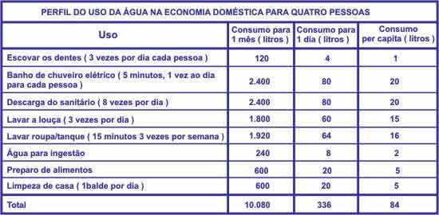

(Yuri Gagarin- primeiro astronauta russo e mundial a enxergar o planeta do espaço)
“E a fonte cantar
chuá, chuá...
E a água a correr
Chuê, chuê...”
(música popular brasileira antiga, criada antes do fator poluição)
Observando essas duas construções (imagem/texto) e lembrando-se de outros conhecimentos, o que a água representa para todos os seres vivos?
2.Texto: O Passeio da Água pelo Mundo
“(...) Ao longo de milhões de anos, pouco se perdeu do estoque original de água no Planeta. A mesma água está sempre sendo bombeada no chamado ciclo hidrológico (...) Em determinado momento, esse vapor se condensa e volta à forma líquida transformado em chuva: cerca de dois terços caem sobre o oceano, onde, graças às correntes, as moléculas de água passeiam entre a superfície e o fundo, numa viagem que pode durar mil anos; o restante, se não vai para os lagos e rios, infiltra-se na terra. No subterrâneo, segundo o ciclo natural, o líquido fica de duzentos a dez mil anos, conforme a profundidade do lençol aquático, até borbulhar em alguma nascente ou mesmo jorrar em um fumegante gêiser. Nesse instante, finalmente torna à superfície para, depois de certo tempo – alguns dias ou milhares de anos - , evaporar de novo.”
(Lúcia H. Oliveira)
Escreva seu entendimento do texto.
3. Represente (por imagem) os três estados físicos da água: sólido, líquido e gasoso.
4. Preencha as informações de acordo com as indicações abaixo:
(A) – água doce (B) água salgada (C) água doce potável
Cobre 97,5% de toda água da Terra
Própria para beber, é de quantidade mínima no Planeta.
Estima-se que seja 2,5% da água da Terra.
5. Faça a ligação correta:
1.Rede Hidrográfica
Espaço drenado por uma rede de rios.
2.Bacia Hidrográfica
Curso d’água engrossado por muitos outros (seus afluentes).
3.Divisores de águas
As diversas redes e bacias hidrográficas que se separam por meio de linhas de maior altitude.
6. Leia o texto abaixo:
“ Desde a antiguidade o ser humano utiliza a água para as mais diversas finalidades. É o caso do monjolo(moer grãos) e da roda d’água(mover moinhos), utilizados ainda hoje.
A energia produzida a partir da água está relacionada ao movimento que ela é capaz de provocar.
Apesar de necessárias, as hidreléticas provocam vários prejuízos ao ambiente (destruição de florestas, morte de animais, modificação dos rios que alimentam a represa).
Além disso, depois de um tempo, as represas começam a sofrer um processo chamado assoreamento, em que o material das margens vai sendo levado para dentro d’água”
A. O que você entendeu do texto acima?
B. Relacione o texto com o desperdício da água. (Alterações do meio-ambiente)
7. Mananciais são as fontes de água doce em condições de serem consumidas pelo ser humano. Têm de estar limpas.
Escreva o que sabe sobre:
A. Água contaminada por coliformes fecais
B. Chuva ácida
C. Poluição térmica (alteração de temperatura da água)
8. “Cerca de um terço das águas existentes no continente e ilhas são subterrâneas. Juntamente com os rios, as águas subterrâneas representam a nossa principal fonte de água doce ( própria para o consumo).
Existem dois tipos de lençol de água subterrânea: o freático e o artesiano.”
Explique-os:
A. Lençol Freático:
B.Lençol Artesiano:
9. Coloque C para certo e E para errado:
O ser humano pode viver sem água.
Alguns seres vivos podem sobreviver na água.
A água poluída faz bem à saúde.
Os mamíferos respiram pelos pulmões, já os peixes, moluscos, crustáceos respiram por brânquias
O líquido permite transportar substâncias de um local para outro do organismo
A semente de uma planta necessita de intensa absorção de água (embebição) pargerminar
A água fica estática nos organismos.
Jogar lixo no ambiente é natural, não causa mal algum.
A água pura é incolor (sem cor), inodora (sem cheiro) e insípida (sem gosto).
Vida sem água? Impossível!
10. Desidratação se caracteriza pela perda rápida e intensa de grande quantidade de água do corpo por meio de vômitos e/ou diarréias. Para evitá-la, recomenda-se:
# Dar líquidos para a criança várias vezes ao dia.
# Conservar alimentos perecíveis na geladeira, ver data de validade.
# Lavar bem as mãos antes de qualquer atividade.
# Lavar bem frutas e vegetais.
# Vestir roupas leves, de preferência algodão
# Manter as crianças em ambientes bem ventilados (evitar o sol entre às 10.00 e 14.00 h).
Feita a leitura do texto acima, crie uma história de uma criança desidratada. Como tudo começou? Quais foram os acontecimentos? Como terminou? Dê um título.
11) Observe a tabela e responda as questões:

a) Com a quantidade total de água utilizada durante um mês nesta residência, é possível encher quantos paralelepípedos de 30 cm de comprimento, 1,7 m de largura e 40 cm de largura? Não se esqueça de fazer as conversões necessárias.
b) Com a quantidade de água utilizada durante um mês nesta residência para tomar banho, é possível encher quantos cubos de 1,2 cm de aresta? Não se esqueça de fazer as conversões necessárias.
c) Olhando a tabela de consumo de água, assinale V se for verdadeiro ou F se for falso:
a) Limpar a casa durante um mês gasta menos água do que tomar banho durante 9 dias.
b) Tomar banho é uma das atividades que mais gastam água.
c) A quantidade de água usada para ingestão durante 6 dias é menor que a quantidade de água usada para lavar roupa em 1 dia.
d) Considerando o consumo mensal. Usar a descarga do sanitário 4 vezes ao dia ainda gasta mais água do que lavar a louça 3 vezes ao dia.
e) Escovar os dentes é a atividade que gasta menos água.